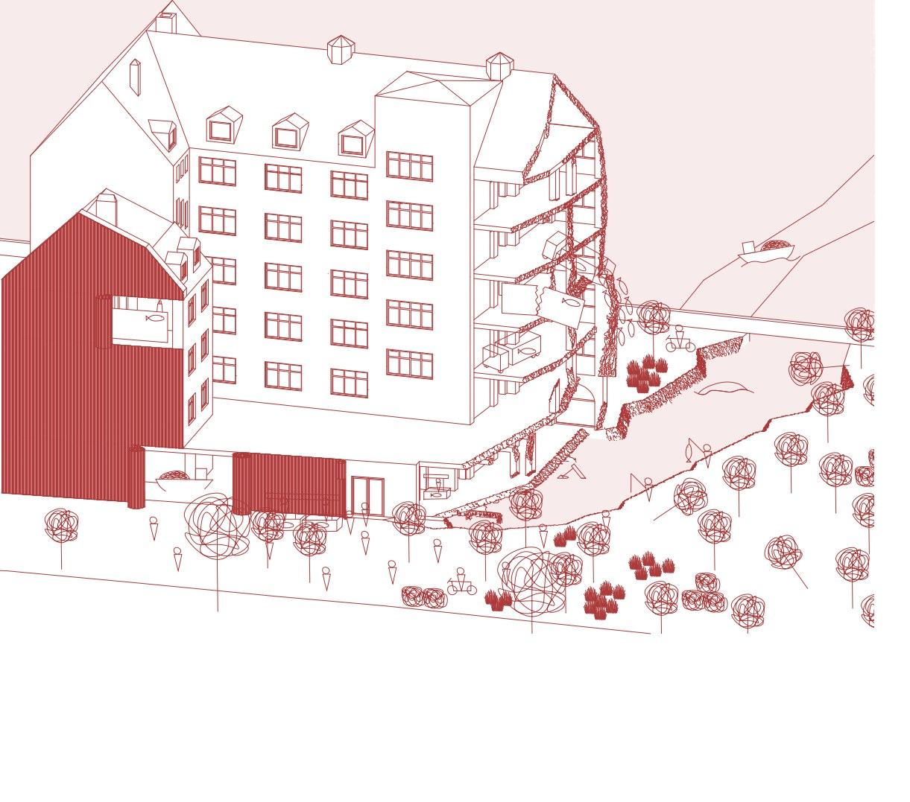

Chalmers University of Technology
Architecture and Urban Design
I’m Niki, an architecture student exploring the connections between buildings, everyday life, and the city.
Explore selected work ↓
From the scale of a building
to the life of a city.
I chose architecture to make the space around me better than I found it.
Across housing, landscape, and urban planning, my attention returns to how each project contributes to the city as a whole. My recent work explores cities as evolving systems, and how design can create the conditions for communities to grow and adapt.
I bring experience in architectural practice, a background in construction, and an interest in understanding complex urban systems.
Download full portfolio ↓ PDFArchitecture and Urban Design
Building Construction and Architecture · Bratislava
TU Delft · Planning and Design for the Just City
Vilnius Tech · Erasmus+ exchange
Junior architect · Large-scale development, architectural interventions and landscape design
Architecture internship
Assistant construction supervisor
Archicad · AutoCAD · Rhino · SketchUp · QGIS
Adobe InDesign · Illustrator · Photoshop
Microsoft Office
Slovak · Native
English · C2
Swedish · A2
French · A2
I’m looking for opportunities in architecture and urban design.
I’d love to hear about your studio and the work you’re doing.